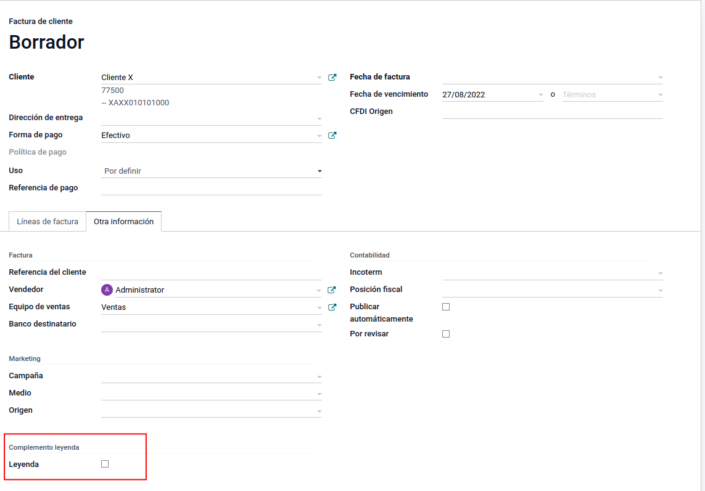
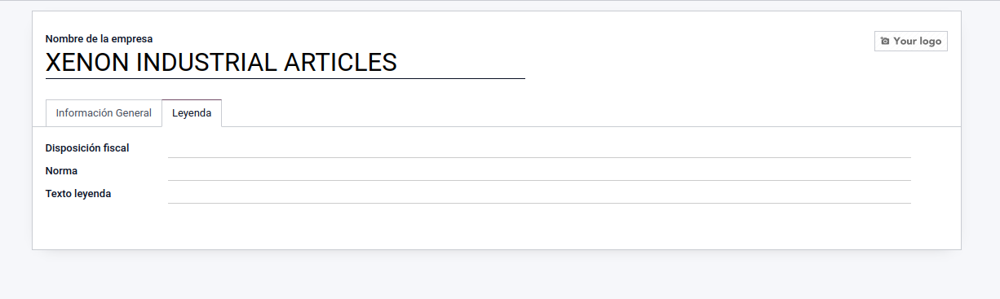
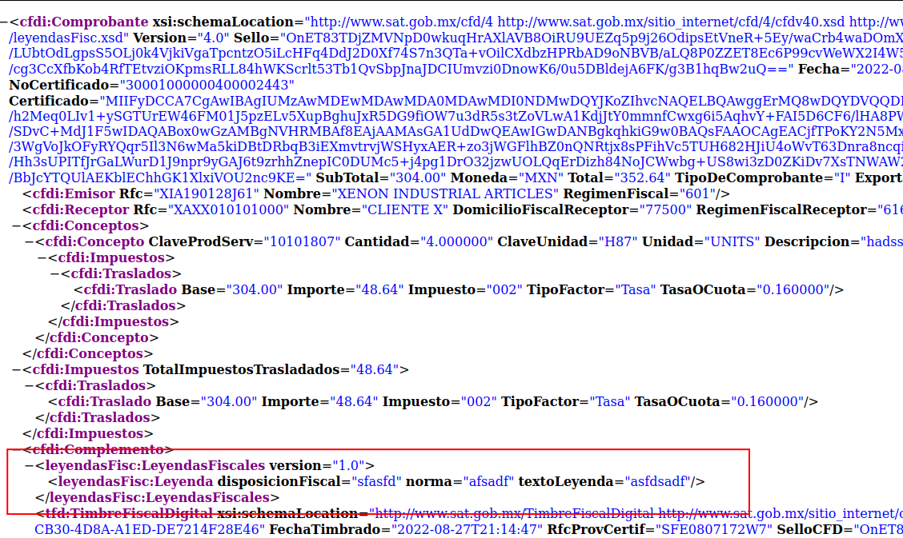
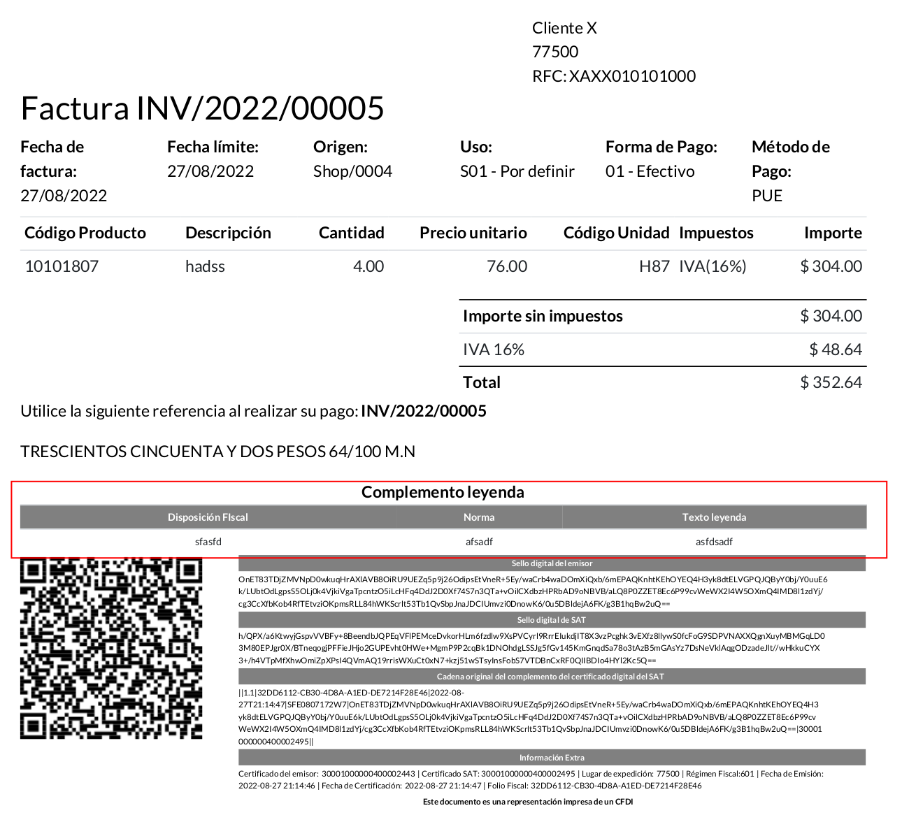

Complemento Leyenda
Se agrega un botón para activar el complemento leyenda

Se configura la información del complemento donataria en la configuración de la compañia

Vista del XML

Vista del PDF
